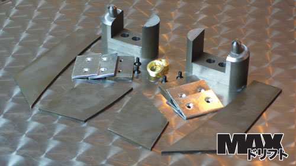
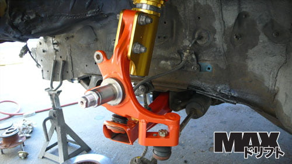
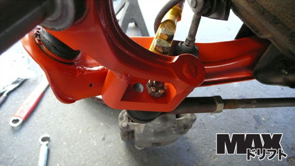

-
Well those are stock S12 knuckles, this person shortened and welded them. I wonder is the knuckles from an SE-V6 model would work?1984 Hardtop Z31NA2T: Angrily decomposing due to lack of motivation
1986 Z31NA: Dead and gone -
I will not be excessively shortening the knuckle as the example above shows. Shortening the knuckle:
*Makes less turns to lock (increased steering ratio)
*Makes the car twitchy to inputs
*Increases steering input required, straining driver and pump
*Decreases steering feel
I would rather reduce ackerman with only a small amount of shortening. Reducing Ackermam has its disadvantages as well, but it makes sense for my application.
The Powered by Max kit offers more strength than cutting the stock shit, and provides some bump steer correction. It is easy to machine and weld in comparison to hacking the stock knuckles. Obviously its mounting point locations will be incorrect for the Z31 chassis; you can not simply buy the PBM kit for our car and expect it to work well. However re-creating it for our chassis seems plausible…


"produce first.talk second." -
Uh.....WTF is that?? We need something a little more professional looking than that I would think."Its the s12's sexy over weight step daughter, the z31" -
Despite the apparently poor design that is extremely popular and appears to work reliably. It defies my simpleton logic for construction but I won't argue it's effectiveness.http://z31performance.com/forum/viewtopic.php?f=5&t=147 -
Would you care to elaborate? I've researched every other option on the market, and PBM is the best in my opinion in terms of design and strength. I believe it is superior to cutting and welding the shitting cast knuckles, and several have proved its strength in D1 comp. It also allows some adjustment, and corrects bumpsteer.nismopu wrote: Uh.....WTF is that?? We need something a little more professional looking than that I would think.
Also, realize that this component has only a few precision machined features (even those are probably toleranced very loosely). Think about what it does, and the tolerances needed to accomplish that; this makes it even easier to machine.
Your input is appreciated; Copying this kit with revised dimensions for the Z31 seems like an excellent option."produce first.talk second." -
Whats not professional about it? People love powered by max stuff, including Matt Powers
http://vimeo.com/10795581
-
This makes absolutely no sense at all.*Makes less turns to lock (increased steering ratio)
If lock on the z31 rack is controlled by the back of the inner tie rod contacting the rack, shorter arms will not change the turns to lock. The same number of turns of the wheel with an increased steering ratio will result in more steering angle. This will increase the ration and angle, not to say however that other suspension components will bind up before the inners contact the rack.
"Beer is proof that god wants us to be happy" - Benjamin Franklin -
or what if they're running proper bumpstops on the steering knuckles, and the inner tie-rods don't contact the rack?khyronzx wrote:This makes absolutely no sense at all.*Makes less turns to lock (increased steering ratio)
If lock on the z31 rack is controlled by the back of the inner tie rod contacting the rack, shorter arms will not change the turns to lock. The same number of turns of the wheel with an increased steering ratio will result in more steering angle. This will increase the ration and angle, not to say however that other suspension components will bind up before the inners contact the rack.irony.cc
-
You are correct Khyron, on the Z31 chassis the inner tie rod hitting the rack controls the stop, and there will not be less turns to lock. There will be less turns the same steering angle as before modding the knuckles, or as you have correctly stated, increased ratio.
I havn't modelled it, but visually it would seem that without a reduction in Ackerman, there is no way to get more angle without "over-centering" or bind."produce first.talk second." -
what about those offsetting steering rack bushings?

1988 300zxt. gt35, stance, etc. Wheels: Varrstoen ES2 18x9.5 et-13 225/40. 18x10.5 et0 245/40
1990 jetta vr6'd -
The knuckles being shorter would increase steering angle if they don't bind first. Maybe there is a sweet spot to shortening (not as drastic as those s12 ones) them where it won't bind, maybe in conjunction with those offset bushes. Those v2 bump steer spacers with the knuckles built in are looking like a mighty good idea about now, could have made the arms slightly shorter too.
"Beer is proof that god wants us to be happy" - Benjamin Franklin -
[quote]Mike_GruiZinga wrote:I think more or less what he is getting at is there is some development of the bumpsteer and steering knuckle as one piece, kind of a catch all that wouldn't involve welding like the PBM kit.Originally posted by nismopu86na - BlueZ
Shiro #366 - Kouki Monster
85t - Mr Tickles -
Didn't the v2's get shelved because of ridiculous machining costs or something though?
"Beer is proof that god wants us to be happy" - Benjamin Franklin -
Yea, well… ridiculous machining costs when catering to Z31 owners at least. :-(Feedback- viewtopic.php?f=18&t=19840

-
Never shelved, just behind the scenes.khyronzx wrote: Didn't the v2's get shelved because of ridiculous machining costs or something though?86na - BlueZ
Shiro #366 - Kouki Monster
85t - Mr Tickles

Copyright © 2006–. All rights reserved. Privacy Policy